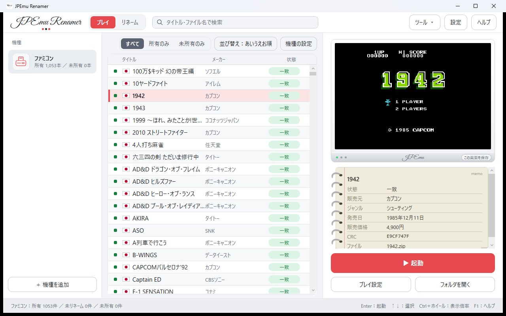
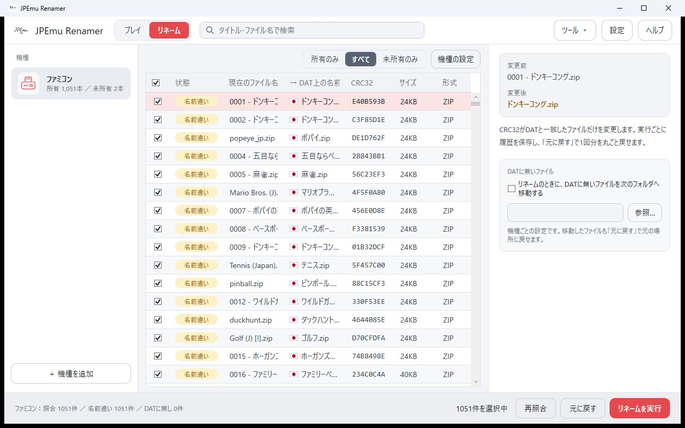
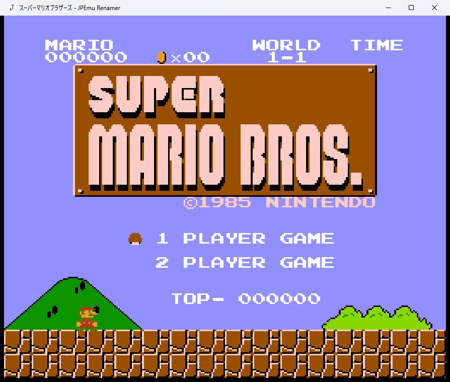
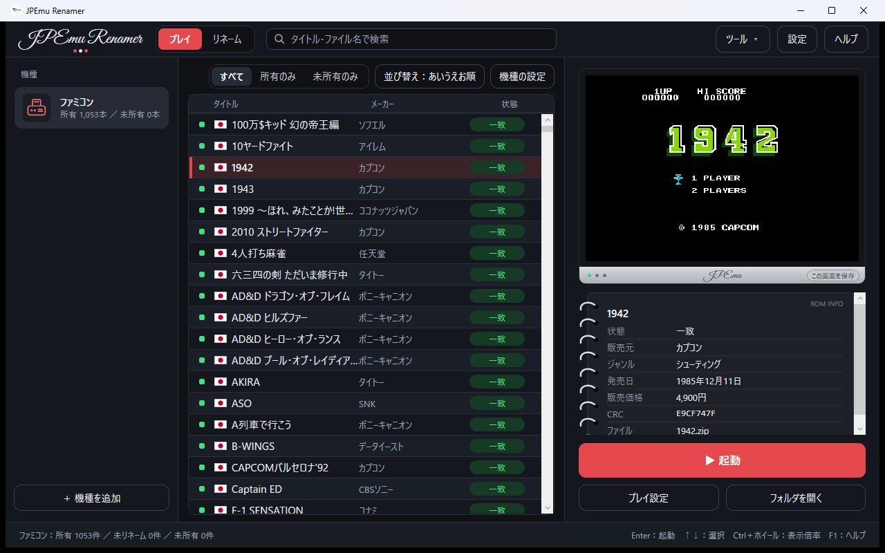

Download
ダウンロード
JPEmu Renamer 1.1.3 (2026.11.09) New
Windows 10 / 11（64bit）・インストール不要のPortableソフトウェアWindows 10 / 11 (64-bit) · portable software, no install needed
各種 DAT(日本語)DAT files (Japanese) v1.0.2 (2026.11.09) New
日本語タイトル・発売日・価格・ジャンル入りのDATを、順次公開します（OfflineList形式）DATs with Japanese titles, release dates, prices and genres, released one by one (OfflineList format)
v1.0.2：22機種・6,968本を収録。ゲームボーイアドバンス、ニンテンドーDS、DSiウェア、ニンテンドー3DS、プレイステーションは順次追加予定です。v1.0.2: 22 systems, 6,968 games. Game Boy Advance, Nintendo DS, DSiWare, Nintendo 3DS and PlayStation are coming later.
- REQUIRES
- ご自身で吸い出したROM。リネームする場合はOfflineList形式のDAT。.NETの別途インストールは不要です。ROMs you dumped yourself, and an OfflineList DAT for renaming. No separate .NET install needed.
- LANGUAGES
- 日本語 · English · 简体中文 · 繁體中文 · 한국어 · Français · Italiano · Español · Português · Русский · Deutsch · Polski · Türkçe · Bahasa Indonesia · Tiếng Việt · ไทย
- SOURCE
- github.com/jpemu-project/JPEmu-Renamer
Screenshots
スクリーンショット




対応ゲーム機（全27機種）SUPPORTED SYSTEMS (27)
- ファミコンFamicom / NES
- ディスクシステムFamicom Disk System
- スーパーファミコンSuper Famicom / SNES
- NINTENDO64Nintendo 64
- ゲームボーイGame Boy
- ゲームボーイカラーGame Boy Color
- ゲームボーイアドバンスGame Boy Advance
- バーチャルボーイVirtual Boy
- ニンテンドーDSNintendo DS
- ニンテンドーDSiウェアNintendo DSiWare
- ニンテンドー3DSNintendo 3DS
- SG-1000SG-1000
- マスターシステムMaster System
- メガドライブMega Drive / Genesis
- スーパー32XSuper 32X
- ゲームギアGame Gear
- メガCDMega-CD / Sega CD
- セガサターンSega Saturn
- PCエンジンPC Engine / TurboGrafx-16
- PCエンジン スーパーグラフィックスPC Engine SuperGrafx
- PCエンジン CD-ROM²PC Engine CD-ROM²
- ワンダースワンWonderSwan
- ワンダースワンカラーWonderSwan Color
- ネオジオポケットNeo Geo Pocket
- ネオジオポケットカラーNeo Geo Pocket Color
- ネオジオNeo Geo
- プレイステーションPlayStation
※順次追加予定* More systems will be added over time.
Manual
マニュアル
- 機種を追加するAdd a system最初の起動で、好きな名前の機種を1つ作ります（例：ファミコン）。On first launch, create a system with any name (e.g. Famicom).
- ROMフォルダとDATを指定するSet the ROM folder and DAT「機種の設定」で、ROMの入ったフォルダとDATファイルを選びます。In System settings, choose the folder with your ROMs and the DAT file.
- リネームするRename「リネーム」タブで変更内容を確認して実行。DATに無いファイルは別フォルダへ移動もできます。Review the changes on the Rename tab and run it. Files not in the DAT can be moved aside.
- 遊ぶPlayコアをダウンロードして、ゲームをダブルクリック（またはEnter）で起動します。Download a core, then double-click a game (or press Enter).
くわしい使い方は、アプリの「ヘルプ」または F1 キーで開くマニュアルをご覧ください。For full details, open the manual from Help or with the F1 key in the app.
Feedback
バグ報告・機能要望
不具合の報告や「こんな機能がほしい」というご要望は、GitHub の Issues からお送りください。使っている機種・ROM・エラーの内容を書いていただけると助かります。Please send bug reports and feature requests through GitHub Issues. It helps to include the system, the ROM and any error message.
Links
リンク
Donate
寄付
いただいたご支援は、検証用のソフトや吸い出し機材の購入、開発の継続に使わせていただきます。応援ありがとうございます。Your support goes toward cartridges and dumping hardware for verification, and continued development. Thank you.
- 毎月MONTHLY$3スポンサーバッジSponsor badge
- 毎月MONTHLY$5READMEにお名前Name in README
- 毎月MONTHLY$10READMEにお名前Name in README
- 1回だけONE-TIME$5+金額は自由Any amount